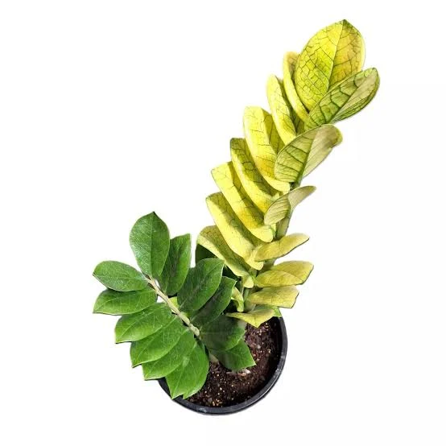
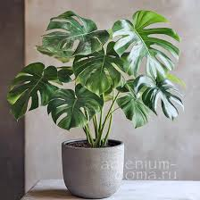
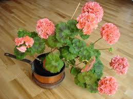
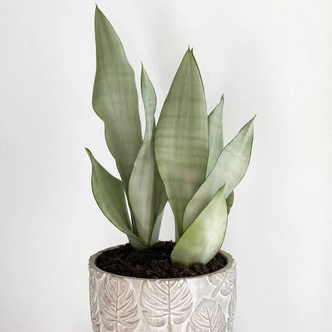
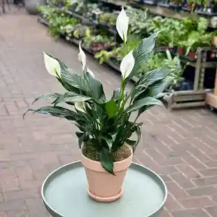

Plantopia допомагає дізнатися про найцікавіші рослини з усього світу. Тут ти знайдеш
інформацію про догляд за кімнатними і садовими рослинами,
їх особливості та користь для дому. Ми розповідаємо про унікальні породи, їхні історії та
цікаві факти. На сайті є поради для початківців та досвідчених любителів зелені.
Ти дізнаєшся, як правильно поливати, підживлювати та пересаджувати рослини. Крім цього, ми
показуємо, як красиво оформити свій простір за допомогою зелених акцентів.
Приєднуйся до Plantopia і відкрий для себе світ живої природи!
Відкрий світ рослин з Plantopia
Наші рекомендації:

Алоє вера

Заміокулькас


Папороть

Пеларгонія

Сансевієрія
